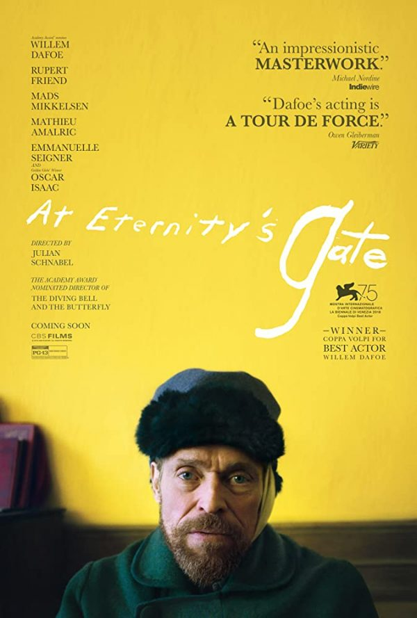

เรื่องเล่าชีวิตปวดร้าวในงานศิลปะสีสดใสของวินเซนต์ แวน โกะห์
เมื่อต้นเดือนมิถุนายนนี้ มีนิทรรศการศิลปะแนวใหม่ที่มีชื่อเสียงระดับโลกมาจัดแสดงให้ชมกันในกรุงเทพฯ นิทรรศการนี้มีชื่อว่า ‘Van Gogh. Life and Art’ ที่ปลุกชีพผลงานชิ้นเอกและเรื่องราวของหนึ่งในศิลปินผู้อาภัพที่สุดและยิ่งใหญ่ที่สุดในโลกศิลปะให้กลับมามีชีวิตชีวาอีกครั้งด้วยสื่อมัลติมีเดียอันทันสมัย
แวน โกะห์ เป็นจิตรกรชาวดัตช์ยุคโพสต์-อิมเพรสชั่นนิสม์ ผู้ทรงอิทธิพลที่สุดคนหนึ่งของวงการศิลปะสมัยใหม่ในโลกตะวันตก ตลอดชีวิตการทำงานเขาดิ้นรนถ่ายทอดสภาวะทางอารมณ์ ความรู้สึก และจิตวิญญาณลงในผลงานอย่างเต็มเปี่ยมผ่านสีสันสว่างเจิดจ้า มีชีวิตชีวา ฝีแปรงหนักหน่วงเต็มไปด้วยจังหวะจะโคนจากการใช้เทคนิค Impasto หรือการใช้สีหนาหนักป้ายลงไปบนผืนผ้าใบจนเห็นเป็นรอยฝีแปรงหรือรอยเกรียงปาดสีหนานูนแสดงออกถึงอารมณ์ความรู้สึกภายในมากกว่าจะนำเสนอความเหมือนจริงอย่างที่ตาเห็น
สไตล์การทำงานอันแปลกประหลาด รุนแรง ทรงพลัง และสีสันที่มีความหมายเชิงสัญลักษณ์คือเอกลักษณ์เฉพาะตัวอย่างยากจะหาใครเสมอเหมือน ส่งอิทธิพลต่อศิลปินและกระแสเคลื่อนไหวทางศิลปะอย่างมากมายนับไม่ถ้วนนับตั้งแต่ช่วงศตวรรษที่ 20 จวบจนถึงปัจจุบัน

แม้ยุคนี้โลกจะชื่นชมแวน โกะห์ ในฐานะศิลปินผู้ยิ่งใหญ่ถึงขั้นมีนิทรรศการที่สดุดีเขาจำนวนมาก แต่ในช่วงเวลาที่เขามีชีวิตสังคมกลับจดจำจิตรกรผู้มีสีแดงเพลิงคนนี้ว่าเป็น ‘ศิลปินบ้าคลั่งผู้ตัดหูตัวเอง’ แถมยังมองว่าผลงานของเขาเป็นผลพวงมาจากความบิดเบี้ยวทางจิตใจ
และเพื่อการดูนิทรรศการ Van Gogh. Life and Art อย่างลึกซึ้งยิ่งขึ้น ต่อจากนี้คือเรื่องราวและงานศิลปะของศิลปินผู้ไม่เคยได้รับความรักตอนมีชีวิต แต่กลับสร้างแรงบันดาลใจให้คนทั่วโลกในทุกวันนี้
metmuseum.org
Life and Art of Van Gogh
Vincent Willem van Gogh (ภาษาดัตช์ออกเสียงว่า ‘ฟัน โคค’) เกิดที่หมู่บ้านเล็กๆ ในเมืองบราบันต์ ตำบลซันเดิร์ต ประเทศเนเธอร์แลนด์ในครอบครัวของบาทหลวง สมัยเด็กเขามีบุคลิกขี้อาย อ่อนไหว เงอะงะ และเก็บตัว เมื่ออายุได้ 16 ปี เขาเริ่มต้นอาชีพการงานด้วยการเป็นลูกจ้างในแกลเลอรีค้างานศิลปะของคุณลุง แต่ด้วยความซื่อและเถรตรง เขาจึงเบื่อหน่ายเมื่อแกลเลอรีมักจะเอางานชั้นเลวมาหลอกขายให้ลูกค้าที่ไม่รู้จักงานศิลปะ หลายต่อหลายครั้งเขาถึงกับบอกให้ลูกค้าไม่ซื้อภาพวาดเหล่านั้นจนทำให้ถูกไล่ออกจากงานในที่สุด
จากนั้น เขาหันไปศึกษาศาสนาอย่างจริงจังและย้ายไปอาศัยในเหมืองถ่านหินในเมืองกันดารเพื่อเทศนาสั่งสอนช่วยเหลือคนทุกข์ยากในเหมืองโดยไม่รู้จักเหน็ดเหนื่อย ด้วยความตั้งใจใฝ่ฝันที่จะเป็นนักเทศน์ แต่ก็ประสบความล้มเหลว ในช่วงนี้เองที่เขาเริ่มสเกตซ์และวาดภาพคนในเหมืองเอาไว้
หลังจากกลับมาอยู่บ้านกับพ่อแม่ แวน โกะห์ หวนกลับมาวาดรูปอีกครั้ง เริ่มต้นจากการวาดภาพคนและทิวทัศน์ด้วยการศึกษาเทคนิคการวาดภาพจากหนังสือกายวิภาคและทัศนียภาพ รวมถึงหนังสือศิลปะต่างๆ เขาวาดภาพชาวนาและทิวทัศน์ในละแวกบ้านด้วยปากกาและสีน้ำ ในช่วงแรกเขาได้แรงบันดาลใจจากศิลปินชั้นครูอย่าง Jean-François Millet, Honoré Daumie และ Rembrandt ซึ่งว่ากันว่าการเซ็นชื่อศิลปินด้วยชื่อต้นอย่าง Vincent แทนที่จะเป็นชื่อสกุลก็ได้แรงบันดาลใจมาจากเรมบรันดต์นั่นเอง
ในช่วงปี 1881 เขาได้เข้าเรียนศิลปะกับ Anton Mauve จิตรกรเหมือนจริงชั้นครูแห่งสถาบัน Hague School ในกรุงเฮกที่ไม่เพียงสอนพื้นฐานการวาดภาพ การใช้สีน้ำและสีน้ำมัน หากแต่ยังขยายขอบเขตพื้นฐานการแสดงออกในฐานะศิลปินให้เขาด้วย ในช่วงนี้เองที่เขาวาดภาพหุ่นนิ่งรูปกะหล่ำปลีและรองเท้าไม้ หรือ Still Life with Cabbage and Clogs (1881) ด้วยการใช้สีเอิร์ธโทนมืดหม่นสไตล์ดัตช์ ผสมผสานกับการใช้แสงสว่างสดใสซึ่งกลายเป็นสไตล์อันเป็นเอกลักษณ์เฉพาะตัวของเขาในภายหลัง
Still Life with Cabbage and Clogs (1881) / commons.wikimedia.org
ปี 1882 เขาวาดภาพทิวทัศน์สีน้ำมันภาพแรกๆ ของตัวเองอย่าง View of the Sea at Scheveningen (1882) นำเสนอทิวทัศน์ท้องทะเลใกล้กับกรุงเฮกในรูปแบบเหมือนจริงผสมกับการใช้ฝีแปรงอันหนาหนักแบบ Impasto ซึ่งคล้ายคลึงกับงานศิลปะอิมเพรสชั่นนิสม์ที่กำลังเฟื่องฟูในยุคนั้น นอกจากนี้เขายังได้รับการว่าจ้างให้วาดภาพลายเส้นทิวทัศน์เมืองของกรุงเฮกจากลุงของเขาอีกด้วย
View of the Sea at Scheveningen (1882) / en.wikipedia.org
ในปี 1883 เขาวาดภาพ Bulb Fields (1883) ภาพทิวทัศน์ทุ่งดอกไม้สีขาว น้ำเงิน ชมพู และเฉดสีทองของผืนดิน กับเนินเขาสุดลูกหูลูกตาและท้องฟ้าที่เต็มไปด้วยเมฆขาวโพลน ซึ่งการใช้แสงสีอันสดใสในภาพนี้นี่แหละที่จะกลายเป็นเอกลักษณ์อันโดดเด่นในการทำงานของเขาในภายหลัง
Bulb Fields (1883) / amazon.com
ถึงอย่างนั้น ชีวิตของแวน โกะห์ กลับไม่สดใสอย่างภาพเพราะหลังจากนั้นเขาประสบกับมรสุมชีวิต ทั้งจากการเสียชีวิตของพ่อและความผิดหวังในความรัก ปลายปี 1883-1885 แวน โกะห์ ใช้เวลาอยู่ในหมู่บ้านทางเหนือของเมืองนูนเอิน และมุ่งเน้นบันทึกภาพชีวิตของชาวไร่ ชาวนา และช่างทอผ้า ในช่วงนี้นี่เองที่เขาวาด The Potato Eaters (1885) ที่นำเสนอภาพชีวิตของครอบครัวชาวนาล้อมวงกินอาหารมื้อค่ำอย่างสมถะ แสดงให้เห็นแสงเงาอันจัดจ้านที่เขาได้รับอิทธิพลมาจากเรมบรันดต์
The Potato Eaters (1885) / commons.wikimedia.org
ภาพนี้นับเป็นผลงานชิ้นเอกชิ้นแรกของเขาเลยก็ว่าได้
ช่วงปี 1886 แวน โกะห์ เข้าเรียนในสถาบัน Antwerp Academy เป็นช่วงสั้นๆ ก่อนที่จะย้ายไปอยู่อาศัยในปารีสกับ Theo น้องชายของเขาซึ่งเป็นนายหน้าค้างานศิลปะผู้มีชื่อเสียง ที่นั่น ธีโอแนะนำให้เขารู้จักกับผลงานของศิลปินอิมเพรสชั่นนิสม์ชื่อดังในยุคนั้นอย่าง Claude Monet, Pierre-Auguste Renoir และ Georges Seurat ซึ่งส่งอิทธิพลต่อการทำงานของเขาอย่างมาก แวน โกะห์ ได้ทำความรู้จักและสนิทสนมกับศิลปินหนุ่มอีกคนอย่าง Paul Gauguin ในช่วงเวลาด้วย
ช่วงปี 1887 แวน โกะห์ เริ่มทดลองใช้เทคนิคการแต้มจุดสี (pointillist) ที่ได้รับอิทธิพลจากเซอราในการวาดใบหน้าของตัวเองหลายภาพ อาทิ ภาพ Self-Portrait with Grey Felt Hat (1887) ที่ใช้ปื้นสีเล็กๆ จำนวนนับไม่ถ้วนผสานตัวกันเป็นรูปเป็นร่างเมื่อมองในระยะไกล และเพื่อสร้างอารมณ์ความรู้สึกของความเคลื่อนไหวแห่งสีสันในภาพ
Self-Portrait with Grey Felt Hat (1887) / vincentvangogh.org
ในช่วงนั้นเองที่แวน โกะห์ เริ่มสนใจงานศิลปะญี่ปุ่นที่เรียกว่า Ukiyo-e อันเต็มไปด้วยสีสันสดใสฉูดฉาดบาดตา เขาและศิลปินในยุคสมัยนั้นอย่าง โมเนต์ และ Edgar Degas ต่างสะสมภาพเหล่านี้และได้รับอิทธิพลของการใช้องค์ประกอบและสีสันมากันถ้วนหน้า เป็นส่วนหนึ่งของกระแสความนิยมที่เรียกขานว่า Japonisme นั่นเอง
ด้วยอิทธิพลนี้ แวน โกะห์ คัดลอกและดัดแปลงภาพนางโลมของศิลปินอุกิโยเอะชาวญี่ปุ่น Keisai Eisen ออกมาเป็นแบบฉบับของเขาเองในภาพ Courtesan after Eisen (1887) แต่เปลี่ยนฉากหลังจากดอกซากุระในภาพต้นฉบับให้เป็นดอกบัวในสระแทน

Courtesan after Eisen (1887) / art-vangogh.com
ปี 1888 แวน โกะห์ ย้ายออกจากบ้านของธีโอในปารีสไปอยู่ในเมืองอาร์ลส์ ทางตอนใต้ของฝรั่งเศส โดยไปเช่าบ้านที่มีชื่อเรียกว่า ‘บ้านสีเหลือง’ และวาดภาพทิวทัศน์ท้องทุ่งดอกไม้ ท้องทะเล ทิวทัศน์เมือง และบุคคล ไม่ว่าจะเป็นภาพ The Yellow House (The street) (1888), The Bedroom (1888) และผลงานที่เพิ่งถูกค้นพบล่าสุดเมื่อปี 2013 อย่าง Sunset at Montmajour (1888)
ที่นี่ เขายังทำงานต่อเนื่องจากช่วงที่อยู่กับน้องชายที่ปารีส เป็นชุดภาพวาดดอกทานตะวันดอกใหญ่สีเหลืองอร่ามท่ามกลางฉากหลากสไตล์ ภาพอันสดใสชุดนี้กลายเป็นที่รักของบรรดาผู้เชี่ยวชาญ นักวิจารณ์ และคนรักศิลปะทั่วโลกจากการใช้ค่าสีเหลืองหลากหลายเฉดกับฝีแปรงหนาหนักจนกลีบและเกสรดอกไม้มีความนูนดูเป็นสามมิติ ผสมผสานความเรียบง่ายซื่อตรงเข้ากับรายละเอียดอันรุ่มรวยเปี่ยมอารมณ์ ตามแบบฉบับเฉพาะตัว

ในบ้านสีเหลืองแห่งนี้เอง แวน โกะห์ ตระเตรียมห้องหับเพื่อต้อนรับเพื่อนศิลปินอย่างโกแกงที่วางแผนมาเยี่ยมเยือนเขาในอาร์ลส์ แต่ถึงแม้แวน โกะห์ จะวาดหวังไว้อย่างสวยงามว่าทั้งคู่จะได้ร่วมกันทำงานและสร้างชุมชนศิลปะขึ้นในบ้านแห่งนี้ความฝันของเขากลับพังทลายอย่างไม่เป็นท่า
นั่นเพราะแม้ทั้งคู่จะสนุกกับการทำงานในช่วงแรกและต่างวาดภาพที่เป็นตัวแทนของกันและกันหลายต่อหลายภาพ แต่ด้วยทัศนคติในการทำงานที่แตกต่างกันอย่างสิ้นเชิง แวน โกะห์ ชอบทำงานกลางแจ้งที่ได้ปะทะตอบโต้กับดินฟ้าอากาศรอบตัวอย่างตรงไปตรงมาและถ่ายทอดลงบนผืนผ้าใบอย่างฉับพลันทันใดในขณะที่โกแกงนั้นตรงกันข้ามอย่างสุดขั้ว เมื่อความตึงเครียดระหว่างทั้งคู่พุ่งถึงขีดสุด พวกเขามีปากมีเสียงและลงไม้ลงมือกัน แวน โกะห์ สติขาดผึงจนฉวยมีดโกนหมายจะทำร้ายโกแกง แต่ท้ายที่สุดเขาก็ใช้มีดโกนเฉือนส่วนหนึ่งของใบหูตัวเองออกแทน ถือเป็นจุดตัดขาดมิตรภาพของศิลปินทั้งคู่
หลังจากเหตุการณ์นี้ แวน โกะห์ เผชิญหน้ากับความทุกข์ทรมานจากอาการเจ็บป่วยทางจิต เขาเข้ารักษาตัวที่ในโรงพยาบาลจิตเวช Saint Paul ในเมืองแซ็ง-เรมี-เดอ-พรอว็องส์ แต่ถึงจะเป็นแบบนั้น เขาก็ยังสร้างสรรค์ผลงานออกมาอย่างต่อเนื่องเป็นจำนวนมากทั้งภาพทิวทัศน์รอบโรงพยาบาลที่แวดล้อมด้วยต้นมะกอกและต้นสนไซเปรส ภาพวาดดอกไอริสในสวน ภาพวาด Starry Night Over the Rhône (1888) และภาพวาด The Starry Night (1889) อันเป็นที่รักและน่าจดจำมากที่สุดในประวัติศาสตร์ศิลปะโลกตะวันตก
ในที่สุด ปี 1890 เขาออกจากโรงพยาบาลมาอยู่ใกล้ๆ กับน้องชายในเมืองเล็กๆ ใกล้กรุงปารีสชื่อ Auvers-sur-Oise ในช่วงนั้นแวน โกะห์ สนิทสนมกับ Dr. Paul Gachet นายแพทย์และจิตรกรสมัครเล่นผู้เข้ามาช่วยดูแลอาการ กลายเป็นมิตรสหายที่ดีของเขา แถมยังเป็นนายแบบให้เขาวาดภาพออกมาอีกหลายภาพ
อาการป่วยทางจิตของเขาเริ่มย่ำแย่ลงเรื่อยๆ ขณะเดียวกัน แวน โกะห์ ยังคงสร้างสรรค์ผลงานอย่างไม่หยุดหย่อน เขาสร้างผลงานออกมากว่า 80 ชิ้นที่ล้วนแล้วแต่ใช้สีสันสดใสเจิดจ้า เดือนสุดท้ายของชีวิตเขาหันมาใช้โทนสีเขียว น้ำเงิน เส้นโค้งเป็นลอนลูกคลื่นบิดเบือนวัตถุและรูปทรงต่างๆ อย่างต้นไม้ ก้อนเมฆ ทุ่งหญ้า และท้องฟ้า สร้างความเคลื่อนไหวอันเปี่ยมอารมณ์ความรู้สึกในภาพ ลักษณะการทำงานเช่นนี้ของเขาก้าวล้ำไปไกลกว่าศิลปะอิมเพรสชั่นนิสม์ในยุคก่อนหน้า กลายเป็นหนึ่งในรากฐานของงานศิลปะโพสต์-อิมเพรสชั่นนิสม์ในที่สุด
หลังจากวาดภาพ Wheatfield with Crows (1890) ที่เชื่อกันว่าเป็นผลงานชิ้นสุดท้ายในชีวิตของเขา ในวันที่ 27 กรกฎาคม 1890 มีคนพบแวน โกะห์ ถูกยิงที่หน้าอกอาการบาดเจ็บสาหัสก่อนเสียชีวิตในอีกสองวันต่อมาด้วยอาการติดเชื้อในกระแสเลือดในวัยเพียง 37 ปี รายงานอย่างเป็นทางการระบุว่าเขาฆ่าตัวตายแต่ล่าสุดมีการตั้งข้อสันนิษฐานว่าเขาน่าจะเสียชีวิตจากอุบัติเหตุในยามที่มีปากเสียงกับเด็กหนุ่มผู้คึกคะนองในละแวกนั้นมากกว่า
Wheatfield with Crows (1890) / en.wikipedia.org
ในช่วงเวลาแค่เพียงสิบกว่าปีของอาชีพการงาน แวน โกะห์ สร้างสรรค์ผลงานศิลปะราว 2,100 ชิ้น เป็นภาพวาดสีน้ำมันกว่า 900 ชิ้น และภาพวาดลายเส้น 1,100 ชิ้น ส่วนใหญ่ทำขึ้นในช่วงเวลาสองปีสุดท้ายในชีวิตเขา
ถึงแม้ในช่วงที่ยังมีชีวิตอยู่ แวน โกะห์ จะประสบความล้มเหลวด้านรายได้ในอาชีพศิลปินด้วยความที่ผลงานของเขานั้นแปลกใหม่ล้ำหน้ามาก่อนกาล ตลอดชีวิตเขาจึงขายภาพวาดได้เพียงภาพเดียวเท่านั้นและมีชีวิตอยู่ด้วยความลำบากยากจน
แต่ภายหลังจากที่เขาเสียชีวิต ภาพวาดของแวน โกะห์ กลับกลายเป็นที่นิยมขึ้นมาอย่างมากจากการผลักดันของ Johanna van Gogh-Bonger ภรรยาหม้ายของธีโอ น้องชายของเขา ทำให้ในปัจจุบัน ผลงานที่ไม่มีใครแยแสตอนที่เขายังมีชีวิตกลับกลายเป็นของล้ำค่า ราคาพุ่งพรวด บางภาพกลายเป็นภาพวาดที่มีราคาแพงที่สุดในโลก บางภาพมีราคาสูงกว่า 100 ล้านดอลลาร์สหรัฐ
มีข้อวิเคราะห์ว่าแรงบันดาลใจจากความทุกข์ยากในชีวิตและความไม่มั่นคงทางจิตใจนี่แหละที่ส่งผลให้ภาพวาดของเขาลึกซึ้งและทรงพลังอย่างยิ่ง ทั้งบุคลิกภาพทางอารมณ์อันคลุ้มคลั่งของเขาก็กลายเป็นภาพลักษณ์โรแมนติกของศิลปินผู้เผาผลาญตัวเองเป็นเชื้อไฟแห่งศิลปะ อันเป็นภาพสะท้อนของชีวิตเหล่าบรรดาศิลปินแห่งศตวรรษที่ 20 ทั้งหลาย
นอกจากนี้ยังมีหลักฐานงานวิจัยว่าอันที่จริงแล้วแวน โกะห์ อาจจะเป็นศิลปินผู้มีความรู้และทักษะพื้นฐานในการทำงานศิลปะสูง ทั้งการใช้องค์ประกอบและสีสันและการวางแผนการทำงานอย่างรอบคอบมากกว่าจะทำไปตามสัญชาตญาณแต่เพียงอย่างเดียว ล้มล้างความเชื่อที่ว่าเขาเป็นแค่ศิลปินอารมณ์รุนแรงที่ปาดป้ายสีสันลงบนผ้าใบไปตามความรู้สึกเท่านั้น
Art After the Life of Van Gogh
มากกว่าผลงานของแวน โกะห์ ชีวิตและผลงานของเขายังส่งอิทธิพลต่อกระแสการเคลื่อนไหวทางศิลปะจำนวนนับไม่ถ้วนจวบจนทุกวันนี้ ไม่ว่าจะเป็นศิลปะ Fauvism และ Abstract Expressionism ในภายหลัง วินเซนต์ แวน โกะห์ ได้รับการยกย่องให้เป็นจิตรกรเอกชาวดัตช์ผู้ยิ่งใหญ่เทียบเคียงเรมบรันดต์และถูกยกให้เป็น ‘บิดาแห่งศิลปะสมัยใหม่’ ในที่สุด
เรื่องราวชีวิตของแวน โกะห์ ยังกลายเป็นแรงบันดาลใจ เป็นเชื้อไฟให้กับศิลปินและคนทำงานสร้างสรรค์รุ่นหลังรุ่นแล้วรุ่นเล่าเช่นผลงานต่อไปนี้
Lust for Life
Lust for Life (1934) คือนิยายชีวประวัติโดยนักเขียนชาวอเมริกัน Irving Stone ที่หยิบยกเอาเนื้อหามาจากจดหมายที่เขาเขียนถึงน้องชาย ธีโอ ซึ่งต่อมาในปี 1956 ถูกนำมาทำเป็นหนังในชื่อเดียวกัน
amazon.com
Loving Vincent
ไม่กี่ปีมานี้ จิตรกรชาวโปแลนด์ Dorota Kobiela และโปรดิวเซอร์รางวัลออสการ์ชาวอังกฤษ Hugh Welchman หยิบชีวิตของแวน โกะห์ มาถ่ายถอดผ่านหนังแอนิเมชั่น Loving Vincent (2017) เล่าเรื่องราวไฟแห่งการสร้างสรรค์และโศกนาฏกรรมแห่งชีวิตของแวน โกะห์ จากการรวบรวมจดหมายกว่า 800 ฉบับที่เขาเขียนเอาไว้ ความพิเศษอยู่ที่การใช้ภาพวาดของเขากว่า 120 ภาพมาสร้างภาพเคลื่อนไหวที่วาดด้วยมือโดยมีไฮไลต์อยู่ที่เหตุการณ์น่าสะเทือนใจในชีวิตของเขาซึ่งนำไปสู่การเสียชีวิตที่ยังคงเป็นปริศนาจวบจนทุกวันนี้
lovingvincent.com
At Eternity’s Gate
จิตรกรชาวอเมริกันชื่อดังผู้ผันตัวเป็นผู้กำกับหนังมือรางวัลอย่าง Julian Schnabel ก็หยิบยกเอาชีวประวัติของแวน โกะห์ ในช่วงที่อาศัยและทำงานอยู่ในเมืองอาร์ลส์มาถ่ายทอดลงในหนังเรื่องล่าสุดของเขาอย่าง At Eternity’s Gate (2018) โดยมีนักแสดงเจ้าบทบาท Willem Dafoe รับบทเป็น วินเซนต์ แวน โกะห์ อีกด้วย

Doctor Who
แม้กระทั่งซีรีส์แนววิทยาศาสตร์สัญชาติอังกฤษอย่าง Doctor Who ยังเคยเล่าเรื่องราวของศิลปินเอกในตอน Vincent and the Doctor (2010) ที่ตัวละครย้อนเวลากลับไปหาแวน โกะห์ และพาเขาข้ามเวลาให้มาเห็นความสำเร็จของตัวเองในปัจจุบัน
ที่งานของแวน โกะห์ ได้รับความรักมากขนาดนี้ เราขอยกประโยคของภัณฑารักษ์แห่ง Musée d’Orsay ในซีรีส์ Doctor Who ที่กล่าวถึงความเป็น วินเซนต์ แวน โกะห์ ไว้อย่างน่าประทับใจ
“สำหรับผม แวน โกะห์ เป็นจิตรกรที่วิเศษที่สุดเท่าที่เคยมีมา และแน่นอนว่าเขาเป็นจิตรกรผู้โด่งดัง ยิ่งใหญ่ และเป็นที่รักมากที่สุดตลอดกาล การใช้สีของเขานั้นช่างเลิศเลออย่างหาที่เปรียบมิได้ เขาแปรเปลี่ยนความร้าวรานให้กลายเป็นความงดงามอันสุขสันต์ การถ่ายทอดความทุกข์ทรมานออกมานั้นเป็นเรื่องง่ายแต่การใช้ความปรารถนาและความทุกข์เป็นเครื่องมือถ่ายทอดความปีติสุขและความงามอันแสนวิเศษของโลกใบนี้นั้นยังไม่เคยมีใครทำได้อย่างเขาและอาจจะไม่มีใครทำได้อีกแล้ว
“ในความคิดของผม ชายเถื่อนและแปลกแยกผู้ร่อนเร่ไปทั่วโพรวองซ์คนนี้ไม่ใช่แค่ศิลปินผู้ยิ่งใหญ่ที่สุด หากแต่เป็นมนุษย์ผู้ยิ่งใหญ่ที่สุดที่เคยมีชีวิตอยู่ในโลกนี้เลยก็ว่าได้”